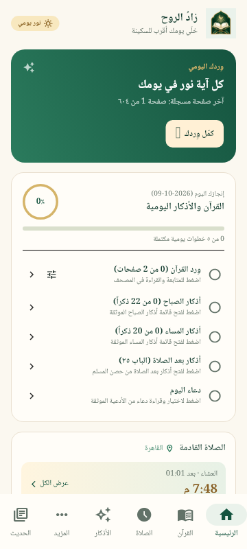
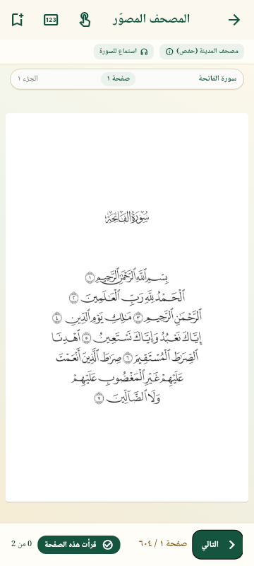
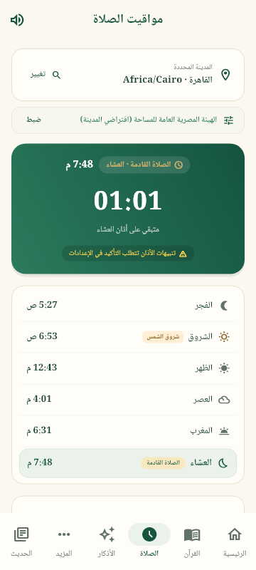
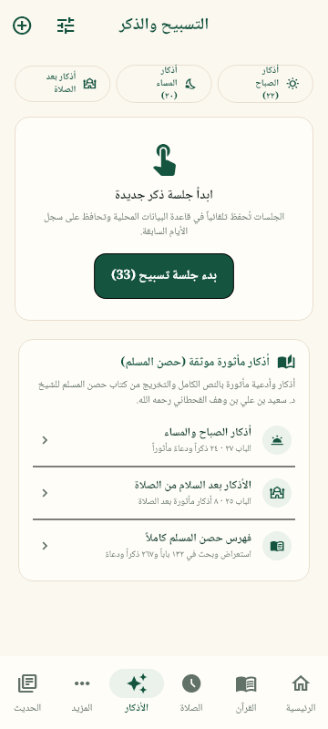

مصحفك معك
٦٠٤ صفحات مصوّرة للمصحف، مع مفضلة الصفحات وعلامات الوقف. بعد تأكيد قراءة الصفحة، كمّل وردك من الصفحة التالية. استمع لتلاوة مشاري العفاسي عند الاتصال بالإنترنت.
القرآن الكريم، وأذكارك اليومية، ومواقيت الصلاة في مكان واحد. تجربة عربية هادئة، تساعدك تكمّل وردك وتحفظ تقدمك.
تحميل التطبيق لأندرويدنسخة تجريبية 0.3.0 · أندرويد 8 فأحدث · الحجم 281.6 MB

المحتوى الأساسي مدمج في التطبيق، لتقرأ وتتصفح حتى من غير اتصال بالإنترنت.
٦٠٤ صفحات مصوّرة للمصحف، مع مفضلة الصفحات وعلامات الوقف. بعد تأكيد قراءة الصفحة، كمّل وردك من الصفحة التالية. استمع لتلاوة مشاري العفاسي عند الاتصال بالإنترنت.
أدعية وأذكار من حصن المسلم ومختارات إضافية موثّقة، مع أقسام واضحة للتصفح، ومتابعة إنجاز اليوم وسبحة إلكترونية.
اختر مدينتك وطريقة حساب الصلاة، وتابع الصلاة القادمة. فعّل تنبيهات أندرويد واختر صوت الأذان من الإعدادات.
٣٢١٣ حديثًا من موسوعة الأحاديث النبوية، متاحة مباشرة من تبويب «الحديث». تصفّحها بترتيب أرقامها، وتنقّل بين السابق والتالي، مع البحث والتخريج والدرجة وروابط المصدر.
لقطات من واجهة التطبيق. الألوان وحجم الخط قابلان للتعديل من الإعدادات.



التحميل مباشر بصيغة APK. النسخة الحالية للتجربة على أجهزة أندرويد 8 أو أحدث.
عن النسخة الحالية: هذه نسخة تجريبية وليست إصدارًا نهائيًا. اختبار الصوت والتنبيهات على الأجهزة المختلفة، والمراجعة البشرية المؤهلة للمحتوى الديني، ما زالا مطلوبين. التوافق مع جميع أجهزة أندرويد غير مضمون.
التطبيق لا يحتاج حسابًا، ولا يضم إعلانات أو حزم تحليلات. تُحفظ التفضيلات والتقدم والمفضلة محليًا. قراءة المصحف والأذكار والأحاديث متاحة دون إنترنت؛ تلاوة القرآن تحتاج اتصالًا بخادم صوت خارجي، وقد يسجل المزود بيانات الاتصال المعتادة مثل عنوان الإنترنت. تفاصيل المصادر والتراخيص والخصوصية متاحة داخل التطبيق في «المزيد ← المصادر والخصوصية».
القراءة والذكر، في متناول يدك.